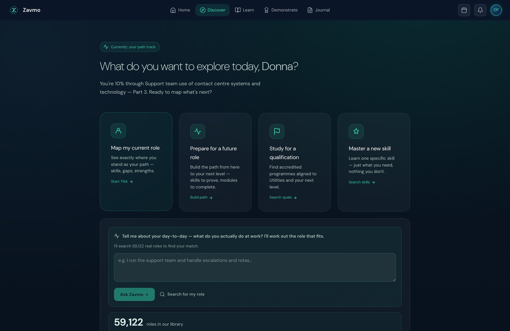

Completion is not change.
Most platforms can tell you someone finished. Zavmo records how they learned — 217 defined statements across 19 signal families, in an open standard, so behaviour change becomes something you can query rather than assert.
Training reports delivery. Almost nothing evidences behaviour.
Completion rates, satisfaction scores and hours delivered all describe what the training did. None of them describes what the learner now does differently at work, which is the only thing anyone was buying. The gap is not that behaviour is unmeasurable. It is that nothing was recording while the learning happened.
92% completion. 4.6 out of 5 satisfaction. 340 hours delivered. All true, and none of it survives the question "so what changed?"
Are they doing it differently? Did the metric move? Can you prove it to an auditor? Three questions a completion figure cannot answer.
A record written as the learning happens, not a survey afterwards. Behaviour becomes a filter over data you already hold.
Nineteen families. Not one framework.
Every learner interaction is captured as a structured xAPI statement — actor, verb, object — with room for results and context. xAPI is vendor-neutral and already spoken by learning record stores, so the record is portable rather than trapped in our platform.
Every exchange scored against Grice's maxims: informativeness, truthfulness, relevance, clarity. Plus satisfaction, misunderstanding repair, tone deviation from the teaching charter, and topic drift.
Response time by complexity tier, time on content against expected, load high and load low thresholds, attention breaks, working-memory probes, comprehension checks, misconceptions detected and resolved, spaced recall.
Growth-oriented and fixed-mindset language markers, persistence after failure, abandonment, choosing the harder option, and whether feedback was actually applied in the next attempt.
Evidence captured at each of the six levels, thresholds met per level, and — unusually — regression, when performance drops a level, recorded with the from and to.
All four levels: reaction, learning, behaviour and results. On-the-job application carries weeks-since-learning. Business KPIs carry a baseline.
Evidence across eight domains, a profile recalculated as new evidence arrives, and content recommendation driven by the profile rather than a guess.
Per-turn markers, so engagement is inferred from what the learner did rather than from whether they logged in.
The largest family. The teaching itself, across the four-dimension delivery model.
The baseline. What the learner already knows, established before anything is taught.
Profile, goals and diagnostics, so the first lesson is not generic.
Which specialist tutor acted, and when the learner was handed between them.
Assessment-criterion evidence and the certification decision itself.
Traceability back to National Occupational Standards and to Ofqual units, so any claim resolves to a published standard.
Personalisation signals, consolidation, career signals, and celebration moments.
Every statement on this page is written from here.
None of this is a reporting layer bolted on afterwards. The record is written by the teaching itself, as it happens — which is why it can describe how someone learned rather than only what they scored. One learner, one path, three moments.

The path is built from a baseline, not a catalogue. What the learner already knows is established before anything is taught, so two people on the same subject do not get the same route. This is where the skills-assessment family writes.

The measurement is visible to the learner, while it happens. On the left, the thinking ladder — Remember and Understand complete, Apply current, Analyse next. Below it, learning signals, live: the statements being written as the lesson runs. On the right, the assessment criteria being evidenced, each with the evidence type it requires. Nothing here is inferred after the fact.

Evidence against named criteria, judged by a person. Demonstration resolves to specific assessment criteria rather than a score. A qualified human assessor makes the decision and a second independently verifies it.
Three things almost nobody else records.
Conversational quality, against linguistics rather than vibes
Each exchange is scored on the four Gricean maxims — was it informative, truthful, relevant, clear — plus repair when a misunderstanding is detected, and deviation when the tutor's tone drifts from the teaching charter. That means the quality of the teaching is itself measured, not just the learner's output.
Growth mindset as behaviour, not a questionnaire
Mindset is usually self-reported on a survey. Here it is observed: did the learner retry after failing, or leave? Did they choose the harder option when offered one? Did the feedback show up in the next attempt? Those are behaviours, recorded as they happen, and they are the closest thing to a leading indicator of behaviour change that a learning platform can produce.
Bloom's regression, not just progression
Most systems record reaching a level. Very few record losing it. A statement fires when performance drops, carrying the level it fell from and to — which is how you find the content that produces a pass and not retention.
One statement, and the four fields that matter.
A Kirkpatrick Level 3 statement records that a capability was applied on the job, and carries:
Separates "remembered it in the room" from "still doing it six weeks later". That distinction is Level 3.
Where it was applied. A live customer call is not a role-play, and the record says which.
The learner's own claim, or a line manager's observation. Both useful. Conflating them is not.
And the field that makes it research-grade: every claim carries basis — observed, self-reported, assessor-judged, or model-inferred. So an analyst can filter to only the claims that survive scrutiny, rather than treating a model's opinion as a measurement.
The AI teaches. A human assesses. And some things we refuse to record.
A qualified human assessor makes every assessment decision, and a second person independently verifies it. The AI is never the assessor of record. Regulators require exactly this: AI may not be the sole marker.
We built a component that inferred a learner's emotional state and deleted it entirely, because we could not explain it to a learner in terms they could verify.
Cognitive load is derived from established weightings, shown to the learner in their own record, and downloadable by them. No signal about a learner exists outside the ledger the learner can see.
In workplace learning, what a system refuses to infer about someone matters as much as what it measures.
What emits today, and what does not.
The registry defines 217 statements. Not all of them are firing, and we would rather say so than show a dashboard we cannot source.
Conversational quality, Bloom's evidence and thresholds, cognitive markers, growth-mindset signals, the baseline, and Kirkpatrick levels 1 and 2 — reaction and learning.
Kirkpatrick levels 3 and 4. The statements, verbs and extension keys are defined and the code exists; emission is being completed now.
The architecture is xAPI-native and the vocabulary is real. Coverage across every interaction is partial and in progress, and we will tell you which is which.
The useful next step is a baseline, not a pilot.
Pick one capability and one business metric. Baseline both. Then the argument is about evidence rather than brochures.